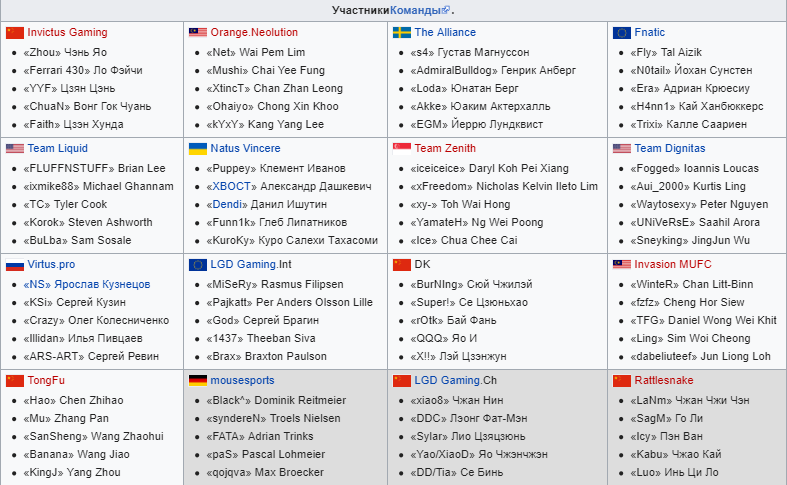

третий турнир The International по игре Dota 2, проведённый компанией Valve, который прошёл в Сиэтле с 3 по 12 августа 2013 года. Начальный призовой фонд составил 1 600 000 долларов США, а дополнительный сбор с билетов составил ещё 1 274 407 долларов США. Призовой фонд, на момент 2013 года, оказался самым большим за всю историю киберспорта. Для освещения турнира были приглашены известные комментаторы, которые в том числе проводили прямые видеотрансляции через сервис Twitch.tv.

В турнире традиционно участвовали 16 команд. Приглашение на турнир получили 13 команд со всего мира, а ещё две были выбраны при помощи онлайн-квалификаций «Wild Card Qualification» проведённых 13—19 мая 2013 года для запада и 20—30 мая 2013 года для востока.Последнее приглашение было разыграно 3 августа в Сиэтле между командами, занявшими вторые места на квалификациях, его получила команда Rattlesnake, обыграв команду ЕС Quantic Gaming.
7 мая 2013 года во внутриигровой магазин была добавлена интерактивная виртуальная книга The Interactive Compendium, которая посвящена The International 2013. Игроки, купившие книгу, получали возможность участвовать в различных голосованиях и конкурсах, а также были награждены определёнными призами. Цена книги составляла $9.99 или 299 рублей. Организаторы сообщили, что 25 % от выручки с продажи книг будут добавлены в призовой фонд турнира, который изначально составлял 1,6 миллиона долларов. По мере того, как призовой фонд турнира увеличивался, владельцы книг получали уникальные подарки. Первая планка в 100 тысяч долларов была покорена уже на следующий день после начала продаж. За это игроки получили мощный бонус к зарабатываемому в играх опыту до окончания The International. Вторая планка в 250 тысяч долларов была взята 12 мая. За это игроки получили уникальные модификации для турнирного курьера. Третья планка в 400 тысяч долларов была взята 16 мая. За это игроки получили уникальный интерфейс игры. Четвёртая планка в 600 тысяч долларов была взята 28 мая. За это игроки получили уникальную насмешку для героев. Пятая планка в 800 тысяч долларов была взята 27 июня. За это владельцы сборника получили возможность выбрать 8 игроков из участников The International 2013, которые сыграли друг против друга в мини-турнире 1 на 1. Шестая планка в 1 миллион долларов была взята 22 июля. За это игроки получили внутриигровой предмет-сокровище, открытие которого даёт один из пяти новых предметов класса «Immortal». Суммарно с продажи сборников призовой фонд был увеличен на $ 1 274 407 и составил $ 2 874 407, что являлось в то время крупнейшим призовым фондом в истории киберспорта.